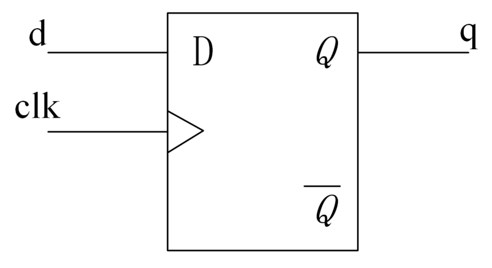

This tutorial often mentions the term synthesis. Or rather, some logic cannot be synthesized into actual circuits, or some logic designs may have safety hazards in the circuits after synthesis. This chapter briefly introduces the relevant knowledge of logic synthesis, only from a theoretical level and general understanding perspective. When that innocent knowledge-seeking youth becomes a middle-aged bald uncle, we will introduce the concrete practice of logic synthesis. It seems there isn't much time left (manually dog head).
Basic Concepts
Synthesis is the process of converting a high-level description of a digital design into an optimized gate-level netlist based on a standard cell library and specific design constraints. The standard cell library corresponds to the technology library and can contain basic logic gate cells such as simple AND gates and NOT gates, as well as special macro cells such as multipliers and special clock flip-flops. Design constraints generally include timing, load, area, power consumption, and other constraints.
Whether in digital chip design or FPGA development, the synthesis process now basically relies on computer-aided logic synthesis tools to automatically convert high-level descriptions into logic gate circuits. Designers can focus on system architecture solutions, high-level descriptions, design constraints, and standard technology libraries, without worrying about how the high-level description is converted into gate-level circuits. The synthesis tool repeatedly performs logic transformation and optimization internally, and finally generates the optimal gate-level circuit. This process is shown below.

Structural Explanation
Simple assignment statements are usually synthesized into basic logic gate cells
assign F = (A & B) | C ;
The above code is usually synthesized into the following gate-level circuit:

Conditional statements are usually synthesized into multiplexers
assign F = sel ? A : B ;
The above code is usually synthesized into the following gate-level circuit:

Clock-triggered assignment statements in an always block are usually synthesized into flip-flops
always @(posedge clk) begin
q <= d ;
end
The above code is usually synthesized into the following circuit:

No matter how complex a design is, after synthesis it will be converted into a gate-level netlist composed of various cell library components. In short, logic synthesis can be narrowly understood as the process of converting a Verilog design into a representation using optimized basic logic gate cells and special macro cells.
Synthesis Flow
The detailed synthesis process from the high-level RTL description to the gate-level netlist is shown in the following figure.

RTL Description
Use a hardware description language (such as Verilog) to design digital circuits, and perform simulation to ensure the correctness of the logic functions.
Translation
The RTL description is converted by the synthesis tool into an unoptimized intermediate representation. This process reads in the basic primitives and operations of the Verilog description, without considering design constraints such as area, timing, and power consumption, and only performs simple internal resource allocation.
Unoptimized Intermediate Representation
The intermediate representation generated during the translation process has a data format recognized internally by the synthesis tool; users cannot and need not understand it.
Logic Optimization
Optimize the design logic and remove redundant logic. This process often deletes or renames some variables in the RTL design, and the logic implementation process often changes as well, in order to achieve optimal logic implementation. This process produces an optimized internal representation.
Technology Mapping and Optimization
Before this step, the design description process is independent of the target technology. In this step, the synthesis tool uses the logic cells provided in the technology library (standard cell library) to implement the internal representation of the design. That is, the design is mapped to the target technology. During the implementation process, timing, area, and power consumption constraints must also be satisfied, and some local optimizations are performed.
Standard Cell Library
As mentioned earlier, the standard cell library corresponds to the technology library and can contain basic logic gate cells such as simple AND gates and NOT gates, as well as special macro cells such as multipliers and special flip-flops.
For better mapping and optimization, each logic cell should contain the following information:
- 1. Functional description
- 2. Layout area
- 3. Timing information
- 4. Power consumption information
Design Constraints
Design constraints generally include timing, area, power consumption, and other constraints. There is often a trade-off relationship among the three. To optimize timing, it may be necessary to increase hardware resources, resulting in larger circuit area and increased power consumption. To produce a smaller circuit, a compromise must be made on circuit speed. Digital circuit design often requires weighing various factors and making trade-offs.
Optimized Gate-Level Representation
After technology mapping and optimization are completed, an optimized gate-level netlist described by the target technology library is finally generated. If the netlist meets various constraint requirements, it will be made into the final layout. Otherwise, the design constraints need to be modified or the RTL description needs to be optimized to obtain a gate-level netlist that meets the constraint requirements. This process is repeated until the final netlist meets the requirements.